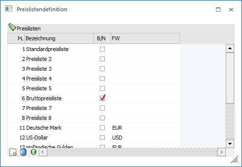
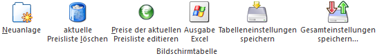

Die WinLine bietet die Möglichkeit einer umfassenden Preisverwaltung. Im Menüpunkt…
1 WinLine FAKT
1 Stammdaten
1 Preisstammdaten
1 Preislistendefinition
… werden hierfür die sogenannten Preislisten angelegt.
Hinweis
Die Eingabe der Preise erfolgt für jeden Artikel individuell (inklusive Verweis auf die Preisliste) und kann u.a. im Artikelstamm (WinLine FAKT - Stammdaten - Artikelstamm - Artikel - Register "Preise" - Unterregister "Preise" - Preistabelle) erfolgen. Die Verbindung zum Kunden / Lieferanten wird durch die Hinterlegung einer Preisliste im Personenkontenstamm (WinLine FAKT - Stammdaten - Konten - Personenkonten - Register "FAKT" - Feld "Preisliste") hergestellt.

In der Tabelle der Preislistendefinition stehen folgende Eingabefelder zur Verfügung:
Ø Preisliste (PL)
Eingabe einer Preislistennummer, die frei vergeben werden kann. Es sind maximal 999 Preislisten möglich.
Ø Bezeichnung
Die Bezeichnung der Preisliste kann maximal 40stellig, alphanumerisch sein.
Ø Bruttopreisliste B/N
An dieser Stelle kann mit Hilfe einer Checkbox definiert werden, ob es sich um eine Netto oder Bruttopreisliste handelt.
ü Checkbox aktiviert
Diese
Preisliste enthält Bruttopreise. D.h. alle einpflegten Preise beinhalten die
jeweilige Steuer.
ü Checkbox deaktiviert
Diese
Preisliste enthält Nettopreise. D.h. alle eingepflegten Preise beinhalten keine
Steuer.
Hinweis
Erfolgt hier eine Änderung bei Preislisten, welche noch in Belegen verwendet werden, so wird eine entsprechende Meldung ausgegeben.
Ø FW
Mit Hilfe einer Auswahlliste kann der Preisliste eine Fremdwährung zugewiesen werden. D.h. alle eingepflegten Preise gelten für die definierte Währung.
Hinweis
Die Definition der Fremdwährungen erfolgt im Programm "Fremdwährungscode" (WinLine FAKT - Stammdaten - Mandantenstammdaten).
Tabellenbuttons

Ø Neuanlage
Mit Hilfe des Buttons "Neuanlage" wird eine neue Zeile (zur Anlage einer neuen Preisliste) in der Tabelle hinzugefügt.
Ø aktuelle Preisliste löschen
Durch Anklicken des Buttons "aktuelle Preisliste löschen" kann die selektierte Preisliste gelöscht werden.
Ein Löschen von Preislisten, welche noch in Belegen verwendet werden, ist nicht möglich.
Ø Preise der aktuellen Preisliste editieren
Durch Anwahl des Buttons "Preise der aktuellen Preisliste editieren" wird das Programm "Preislistenpreise" geöffnet. In diesem können sehr komfortabel Preislisteneinträge (Preisart "1 - Verkaufspreis" und "11 - Einkaufspreis") für bestehende Artikel geändert bzw. neue Einträge angelegt werden.
Ø Ausgabe Excel
Durch Anwahl des Buttons "Ausgabe Excel" wird der Inhalt der Tabelle an Microsoft Excel übergeben.
Ø Tabelleneinstellungen speichern
Die Spalten einer Tabelle können grundsätzlich an beliebige Positionen verschoben, bzw. in der Breite entsprechend angepasst werden. Durch Anwahl des Buttons "Tabelleneinstellungen speichern" werden die Einstellungen benutzerspezifisch gespeichert und bei dem nächsten Aufruf des Programmpunktes wieder vorgeschlagen.
Ø Gesamteinstellungen speichern
Im Gegensatz zu "Tabelleneinstellungen speichern" können mit "Gesamteinstellungen speichern" mehrere Tabellenaufbauten gespeichert und nach Wunsch geladen werden. Zusätzlich werden Sonderfunktionen der Tabelle (z.B. "Spalte gruppieren") ebenfalls bei der Speicherung bedacht.
Buttons

Ø Ok
Durch Anklicken des Buttons "Ok" bzw. der Taste F5 werden alle Neuanlage bzw. Änderungen gespeichert.
Ø Ende
Durch Drücken des Buttons "Ende" bzw. der Taste ESC wird das Fenster geschlossen und alle nicht gespeicherten Eingaben verworfen.
Ø Ausgabe Bildschirm
Durch Anklicken des Buttons kann eine Ausgabe aller angelegten Preislisten am Bildschirm erfolgen.
Ø Ausgabe Drucker
Durch Anwahl dieses Buttons kann ein Ausdruck aller angelegten Preislisten auf dem Drucker erfolgen.